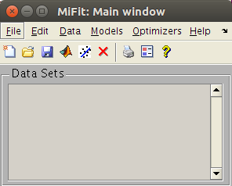

miFit: a user interface for iFit


- Starting
- Loading data and Models
- from files
- from the Matlab/iFit prompt:
Data sets
- from the Matlab/iFit prompt:
Models
- from copy/paste
- from drag-and-drop
- creating a new Data set
- creating new Models
- Working with Data sets
- Plotting data
- Sorting and searching data
- Mathematical operators on Data
sets
- Working with Models (fitting)
- Assigning and Evaluating Models
to Data sets
- Fitting Models to Data sets
- Selecting a fit routine
(optimization algorithm)
- Preferences
- Saving your work
- Saving all data sets, Models
and Preferences
- Exporting selected Data sets
- Exporting Models (and importing
them as well)
This is the miFit help
Starting
To start the miFit interface, just type 'mifit' from
the Matlab prompt when iFit is installed, or from the iFit
stand-alone prompt. The main window will then appear, as follows:
The miFit main window
The main window has menus, a toolbar with icons, and tips that show
up when bringing the mouse pointer over items.
Loading data and
Models
from files
The legacy way to import data files into miFit is to select the Open
item in the File menu. A file selector will pop-up, and
allow to select one or more data files (use Ctrl-click to select
files one-by-one, and Shift-click to select a range). You can
equally select the Open icon in the toolbar.
It is possible to import data files in any supported format
(whole list available in the Loaders
page). Once loaded, the data sets appear in the Data Sets list in
the main window. The Models are inserted in the Models
menu, sorted by dimensionality (1d, 2D, 3D, 4D, others).
Supported formats for Data Sets (stored as iData
objects):
- any Data in text format
- ILL Data (legacy, text, most instruments at the ILL)
- ILL TAS Data (legacy, text, polarized or not)
- ILL Cyclops neutron Laue
diffractometer image (HBIN)
- Chalk River CNBC NRU data,
including multi-wire and polarized data
- SPEC ESRF
- McStas (Scan DAT output,
1D, 2D monitor, event lists, sim file, Sqw, LAZ, LAU tables)
- ISIS/SPE and SQW tof data (see Horace and LibISIS)
- INX tof data (ILL processed
TOF)
- ESRF data format (*.edf)
- Xray/neutron diffraction Crystallographic
binary file (*.cbf)
- MRI
3D volume Analyze
7.5 (*.hdr with associated *.img)
- NifTI medical imaging
volume data format (*.nii)
- NeXT/SUN (.au) sound
- Microsoft WAVE (.wav) sound
- Audio/Video Interleaved (*.avi)
- NetCDF (*.nc)
- CDF (*.cdf)
- FITS (*.fits) used in
astronomy
- Microsoft Excel (*.xls)
- Image/Picture (*.gif, *.bmp, *.tif, *.jpg, *.png, ppm,
pgm, pbm)
- HDF4 (*.hdf4)
- HDF5 (*.hdf5)
including the NeXus format (*.nx,
*.n4, *.ns, *.n5, *.nxs) and more specifically Mantid workspaces.
- Matlab workspace (*.mat) a customized HDF
- Comma Separated Values (*.csv)
- Numerical single block (*.dlm)
- XML (*.xml)
- FIG (Matlab figure, *.fig)
- Protein Data Bank
(*.pdb)
- STL stereolithography
(*.stl)
- OFF object geometry
(*.off)
- PLY Polygon File
Format or the Stanford Triangle Format (*.ply)
- MAR MarResearch CCD
Camera (*.mar, *.mccd), a variant of the TIFF format
- SIF Andor SIF CCD
Camera (*.sif)
- SPE Princeton/Roper
Scientific WinView CCD / PI Acton Camera file (*.spe)
- IMG ADSC Quantum CCD
Camera (*.img)
- CIF, CFL/PCR, INS/RES/SHX Crystallography
files (FullProf, ShelX)
- EZD, MRC and CCP4 electron density
maps (*.map, *.ezd, *.ccp4)
- YAML and JSON (*.yaml, *.yml,
*.json)
- NMR Bruker, Varian and JEOL data files
- IBW Igor Wave data
file (*.ibw)
- OBJ Wavefront 3D
(*.obj)
- LabView LVM and TDMS files (*.lvm;
*.tdms)
- Bruker FT-IR OPUS data files
(*.0001, *.0002, ...)
- LLB TAS binary data files (R* and C*)
- IDL SAV data (*.sav)
- DAT Quantum
Design VMS
ppms/mpms
- XVG XmGrace data set
- Agilent Mass Spectrometry (*.CH, *.D, *.MS)
- Thermo Finnigan Mass Spectrometry (*.RAW)
- ENDF Evaluated
Nuclear Data File (*.endf,*.tsl)
- ACE MCNP files (*.ace)
[requires PyNE]
Supported formats for Models (stored as iFunc
objects):
- M Matlab script/function (*.m)
- MAT Matlab binary file (*.mat)
- JSON JavaScript Object Notation (*.json)
- YAML interchange format (*.yaml)
- XML file (*.xml)
from the Matlab/iFit prompt: Data sets
It is possible to work from the Matlab/iFit prompt, and send any numerical array, as well as iData (data sets) and iFunc (models) objects.
To import a numerical array:
")
a=rand(10);
mifit(a);
or
x = 0:.1:8*pi; y = sin(x);
mifit(x,y);
or
a=[ 0 0
0.1000 0.0998
0.2000 0.1987
0.3000 0.2955
0.4000 0.3894
0.5000 0.4794
0.6000 0.5646
0.7000 0.6442
0.8000 0.7174
0.9000 0.7833
1.0000 0.8415
1.1000 0.8912
1.2000 0.9320 ];
mifit(a);
To import an iData object (data set):
a = iData(peaks);a.Title = 'Peak function'; label(a,1,'my X axis'); label(a,2,'my Y axis');mifit(a);
from the Matlab/iFit prompt: Models
To import a Model:
f=gauss+lorz; f.Background_2=0; fix(f,'Background_2');mifit(f);
The new model is added to the 1D Models menu, as a blue entry, which is used to label 'user' models. Such models are 'static' in the sense that once in the Models menu only their model parameters can be changed. These models are assigned a unique iD in the form iFxxxx.
It is also possible to add Models as expressions, which are then evaluated to create a model. Such models, shown in green in the Models menu, are 'dynamic' in the sense that they are used to effectively create other static models. Such model creators do not have a unique model iD. For instance, the 'sqw_phonons' model is dynamic. When called, it requires to enter parameters to initiate the model creation, such as the DFT code to use, the k-mesk, ... Then, a static model is created, but the parameters used initially (DFT, k-mesh, ...) can not be changed further. However, the model parameters (intensity, ...) can be changed, e.g. during fit processes.
To import a Model expression as a dynamic model (creator), use:
mifit('Models_Add_Entry','gauss+lorz');
from copy/paste
It is possible to use the Copy/Paste mechanism to import data sets. If the copied element is a file, it will be imported the same way as with the Open item above when selecting the Paste item in the Edit menu. You can also click on the grey window background or the 'Data Sets' label above the list, and press Ctrl-Z.
You can also copy whole data blocks (e.g. numerical values/array from a text editor or a spreadsheet), and paste them into miFit.
from drag-and-drop
A very convenient way to import data is to drag a data file, and drop it into the miFit window. A new data sets object is then read, and added to the list.
creating a new Data set
You may create a new data set using a spreadsheet by selecting the New item in the File menu, or the white page icon in the toolbar. Type in your data (Copy/Paste works). The data set will be imported into miFit when you close the window.
creating new Models
The way to define new Models into miFit is via the Matlab/iFit prompt (see above), or by importing a data file containing a model (iFunc) definition.
Working with Data sets
Plotting data
Sorting and searching data
Mathematical operators on Data sets
Working with Models (fitting)
Assigning and Evaluating Models to Data sets
Fitting Models to Data sets
Selecting a fit routine (optimization algorithm)
- Configuration of the algorithm
- Selecting the optimization criteria (least-squares, ...)
Preferences
Saving your work
Saving all data sets, Models and Preferences
Exporting selected Data sets
Into files
To the Matlab/iFit prompt
Copy/Paste
Exporting Models (and importing them as well)